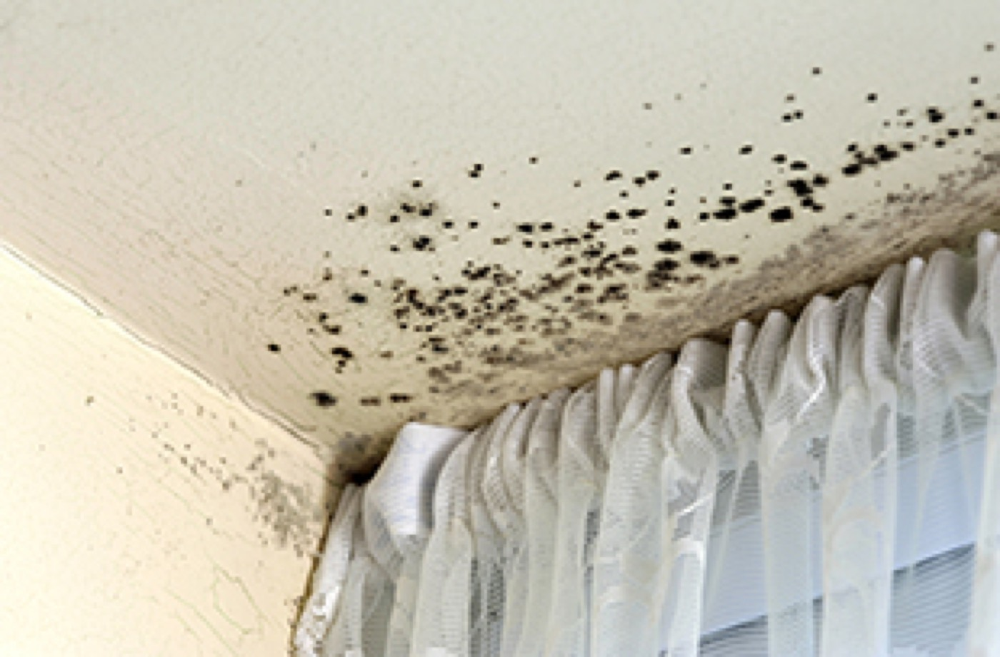

When living in Hackney, one of the most important things that you can do is invest in higher living quality.
Hackney is a tremendous place to stay, but like many parts of London it can be hard to find good air quality. If you are suffering from damp, mould and similar issues when you live in Hackney, you may wish to consider installing positive input ventilation.
This is a central point in the home where a unit is installed, delivering filtered and safe air throughout the home. This can help to make sur that you are no longer dealing with damaging odours and dampness in the home caused by poor air quality. Most people tend to combat problems like condensation and damp by simply using classic measures like opening the windows.
While this works to a point, it will never solve the underlying issue that you are dealing with. Nor will it give you the chance to care for your ventilation quality. With the help of positive input ventilation, though, you remove the chance of this problem arising. This makes it much easier for you to enjoy a more comfortable, high-quality living experience when you are living at home.
Positive Input Ventilation Hackney: Make Your Home Safer Today
When it comes to positive input ventilation, one of the most reasons to consider is it to utilize the air quality. A better quality of air at home means a higher quality of life. This has the natural consequence of giving your family members a better chance of avoiding illness, as the house will no longer carry the same weight of pathogens throughout.
By the same token, though, positive input ventilation is a popular choice as it helps to remove those ghastly odours that float around in the sky. This helps to remove problems with tight and condensed moisture, meaning that your windows will avoid problems such as condensation, rod and mould.
This helps to make sure that your home stays in the best position moving forward. Not only does it help you to reduce these horrible smells that linger around the home; it helps you to reduce the likelihood of energy waste. With less need to leave the windows open all day, you can simply enjoy better energy efficiency without having to make compromises to achieve that.
At the same time, though, you’ll find that it helps to vastly improve the indoor air quality around you. Done right, this can feel fantastic and makes it very easy indeed for you to engage with a much more satisfying experience overall. It helps you to save energy, and can make it easy for you to get rid of those lingering, musty odours floating around.
With a long-term guarantee on positive input ventilation, too, you can get a worthwhile investment for your Hackney home installed nice and quick. For more help in transforming the quality of your indoors, then, be sure to contact our team today. Don’t settle for second-best; invest in positive input ventilation today.

